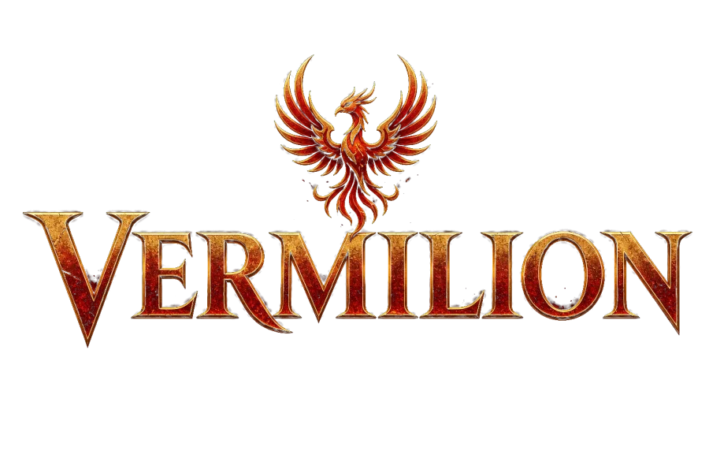
VERMILION 삼국지 명장
실사 초상의 명장 100여 명을 모으고, 진형과 전술로 천하를 다툰다.
App Store에서 다운로드iPhone · iPad 전용 · 무료 다운로드
- 광고 없음
- 확률형 결제 없음
- 오프라인
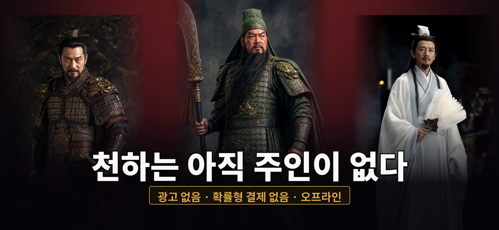
100명이 넘는 명장, 실사 초상으로
장수마다 고유 특기와 열전을 갖췄습니다. 장수 사이의 인연을 맺으면 숨은 힘이 깨어납니다.
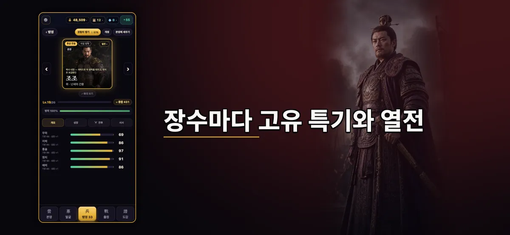
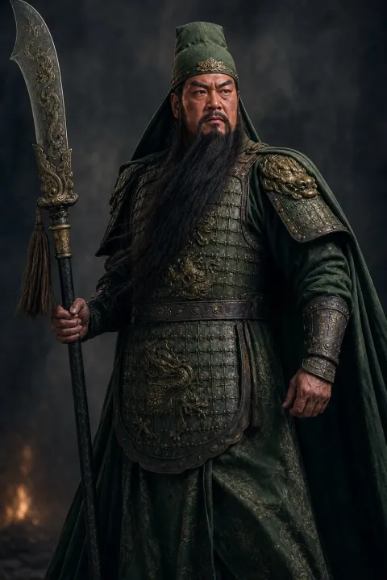
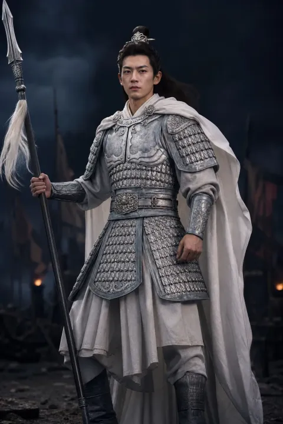
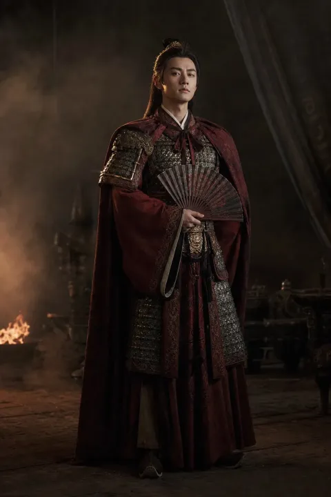
진형과 전술이 승패를 가른다
누구를 어디에 세울지가 전부입니다. 삼국 시대를 관통하는 50개 전장의 캠페인을 진형과 전술로 돌파하세요.
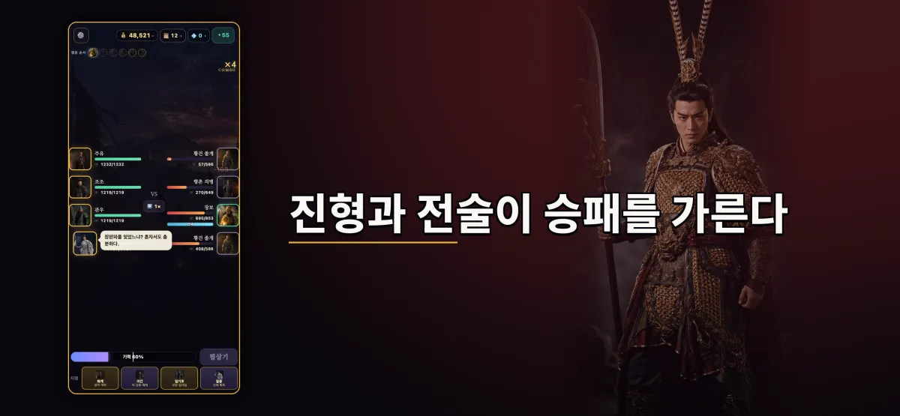
일기당천 — 장수 한 명으로 대군을 가른다
장수 한 명을 직접 조작해 적진을 베어 나가는 액션 모드. 한 판 약 2분 30초, 7개 전장, 난이도 단계 선택.
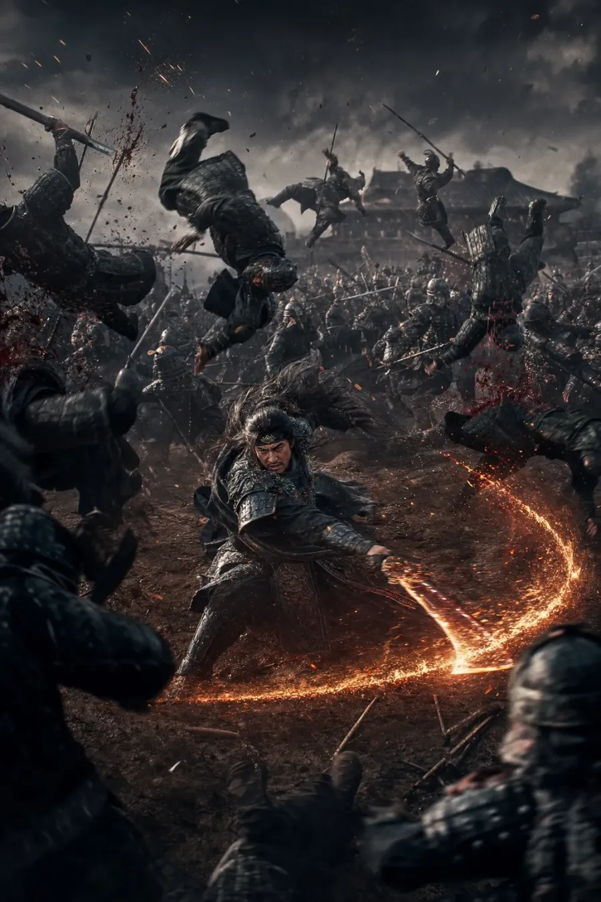
도감과 연무장
모은 장수와 초상은 도감에 차곡차곡 쌓입니다. 연무장에서는 일기토와 퀴즈 같은 미니게임을 즐길 수 있습니다.
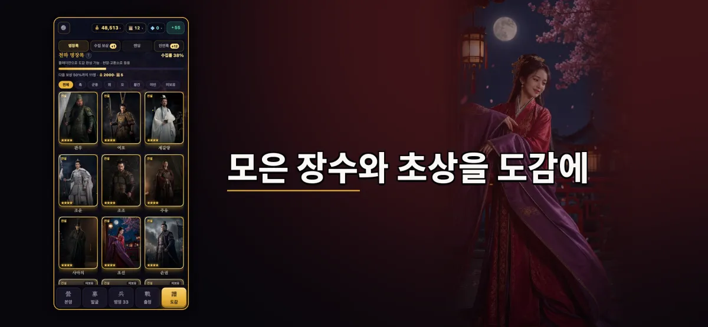
선택이 엔딩을 바꾼다
캠페인 중 내린 선택에 따라 이야기의 결말이 갈라집니다.
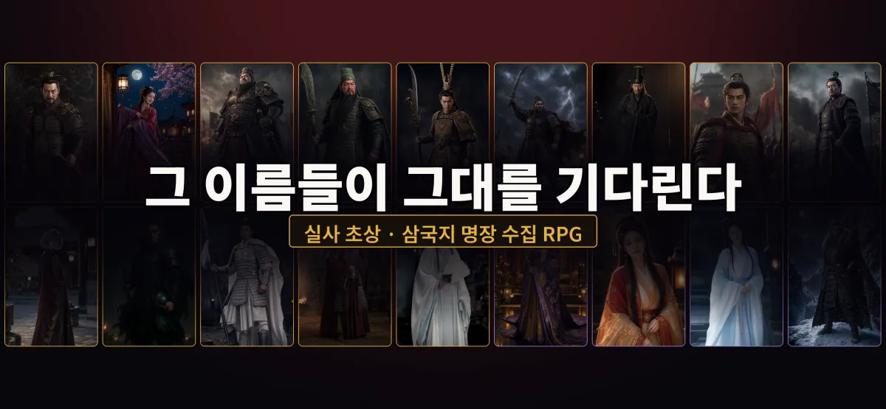
약속
광고 없음
플레이 중 광고가 한 번도 나오지 않습니다.
확률형 결제 없음
장수 모집은 플레이로 얻는 재화로만 합니다. 현금으로 뽑기를 사는 구조가 없습니다. 구독도 없습니다.
모든 장수는 플레이로
성장을 돕는 선택형 아이템이 있지만, 모든 장수는 플레이만으로 얻을 수 있습니다.
완전 오프라인
계정도 서버도 없습니다. 세이브는 기기에만 저장됩니다.
먼저 해 보고 결정
무료 다운로드. 처음 12개 전장(관도까지)은 무료이며, 한 번 구매로 본편 캠페인이 해금됩니다.
스크린샷
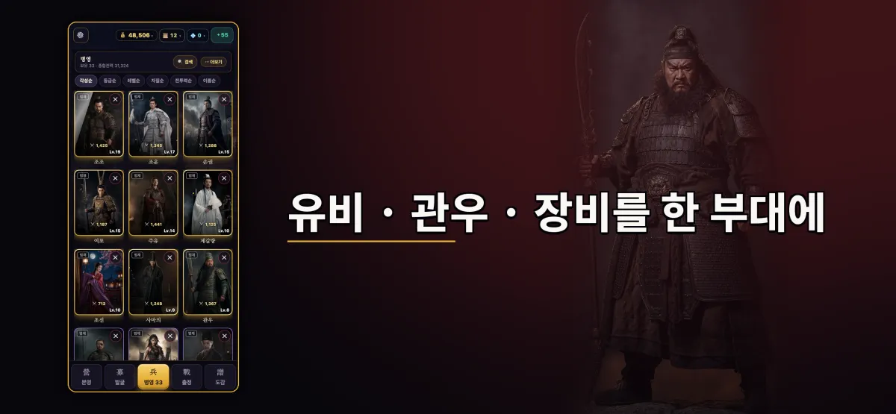
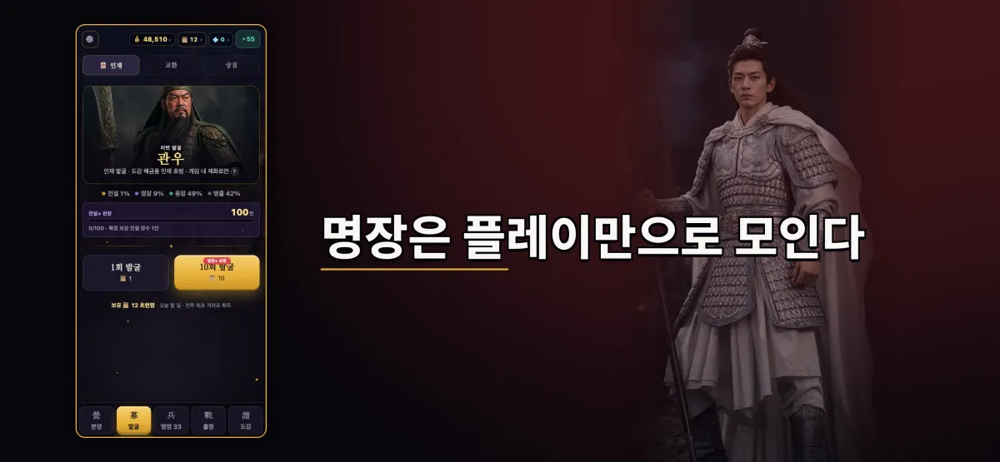
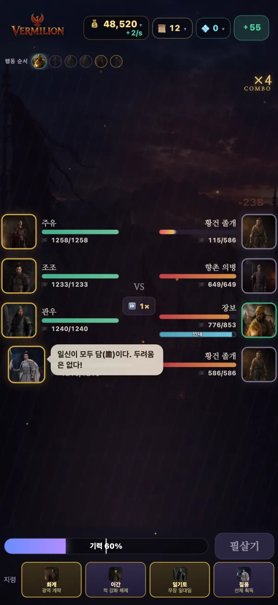
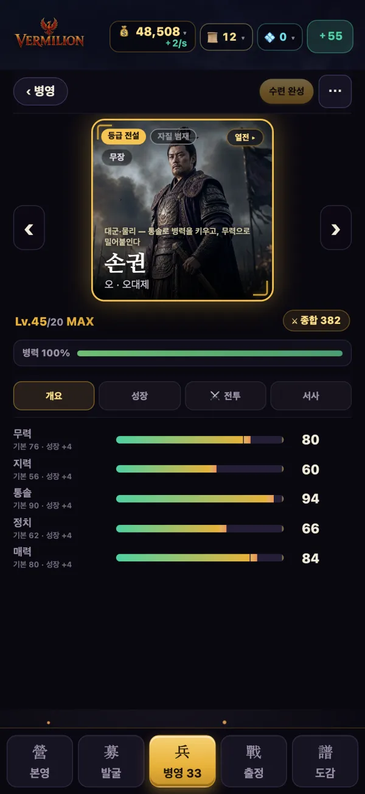
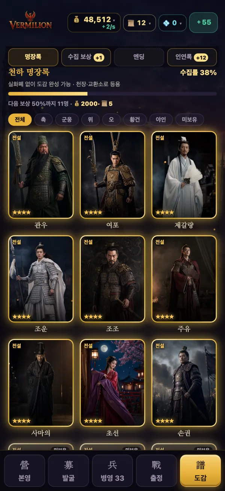
최신 업데이트 1.0.3
- 일기당천 새 전장 「박망파」 — 하후돈과 맞붙습니다.
- 레벨업 시 오른 능력치를 바로 보여 줍니다.
한눈에 보기
- 플랫폼
- iPhone · iPad (iOS)
- 가격
- 무료 다운로드 · 처음 12개 전장 무료 · 한 번 구매로 본편 해금
- 언어
- 한국어 · 日本語 · 繁體中文 · English
- 출시 지역
- 한국 · 일본 · 대만 · 홍콩 · 마카오 · 싱가포르 · 말레이시아